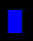

Textarea with the Fib object:
(Input your Fib object to display here (in the Fib Xml representation) or load an example (see below) and modify it.)
(If you want to export or import Fib objects from local files, please use copy and past.
At the time just 24 bit RGB images are supported.)
Examples to load:
(Beware the examples will overwrite the existing Fib object in the textarea.)|
Point (you can use as a starting point) |
Quadrangle  |
Crest |